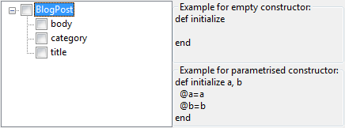

Generate Constructor Using Fields
Description
The code generator Generate Constructor Using Fields creates a constructor. The constructor
will have a variable number of arguments, which might be selected from a list of
the existing fields in the class. In the constructors body, the class fields will be initialized
with the values of the constructor parameters.
Conditions
There are no restrictions on performing this refactoring, but it doesn't make sense to use
it when no class exists in the current file.
If there is already a constructor in the class a warning will be displayed.
Options

From the tree on the left side the fields to be initialized in the constructor can be selected.
Feedback